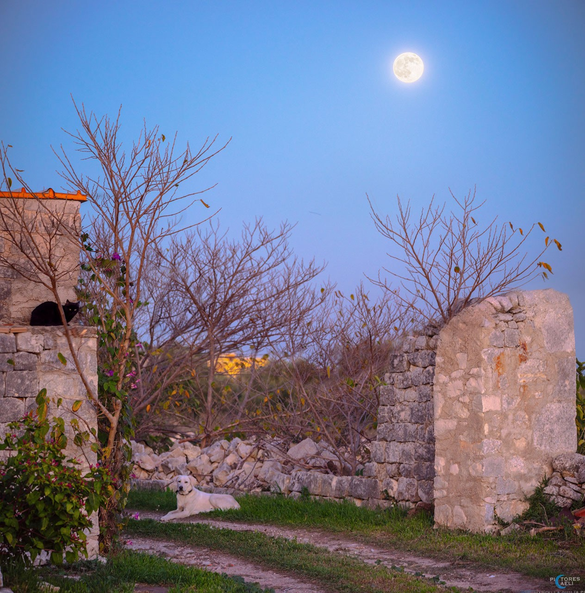

01
Ao vivo: Fortaleza x Criciúma | Playoffs de acesso | Campeonato Brasileiro Série B
ge · 27/11/2026 · 05:45 (Brasília)Fonte original ↗
 Diplomacia BusinessVenezuela e Haiti discutem fortalecimento das relações bilaterais em encontro diplomáticoHungarian Conservative‘Mr Europe’ Is Still Wanted
Diplomacia BusinessVenezuela e Haiti discutem fortalecimento das relações bilaterais em encontro diplomáticoHungarian Conservative‘Mr Europe’ Is Still Wanted Diplomacia BusinessEmbaixador da Índia se reúne com ministro Dias Toffoli para tratar de visita institucional ao país
Diplomacia BusinessEmbaixador da Índia se reúne com ministro Dias Toffoli para tratar de visita institucional ao país www.miragenews.comAntarctic Sea Ice Extent Hits New Low 27 November 2026Middle East EyeMorning update
www.miragenews.comAntarctic Sea Ice Extent Hits New Low 27 November 2026Middle East EyeMorning update
NASA Breaking NewsAPOD: 2026 November 27 – The Moon WatchersIslands BusinessPACNEWS TWO, 27 NOVEMBER 2026 The Brighter Side of NewsPesquisadores da Antártica lançam nova luz sobre as perturbações climáticas espaciais em satélites e redes elétricaswww.msn.comColonos destroem fundações de casas de famílias palestinas na Cisjordânia
The Brighter Side of NewsPesquisadores da Antártica lançam nova luz sobre as perturbações climáticas espaciais em satélites e redes elétricaswww.msn.comColonos destroem fundações de casas de famílias palestinas na Cisjordânia InvestNewsGuerra do delivery testa limites do almoço grátis nos EUABrasil 247França e Alemanha pressionam por acordo sobre orçamento da UE para conter influência de Le PenNASA Breaking NewsShivelyuch Socked InPars TodayHamas: Netanyahu continues genocide by repeatedly violating ceasefireHiiraan OnlineEgito, Somália e Djibuti reafirmam o papel exclusivo dos estados do Mar Vermelho na segurança da hidroviaThe Watchers - Watching the world evolve and transformUma rocha recolhida na Antártida em 1984 revelou-se ser de Marte e fez com que o presidente dos EUA falasse sobre vida alienígena, até que os cientistas mostraram que o seu carbono era produzido pela água e pelas rochas, e não pela vida.İlke Haber AjansıTürkiye’s Security Council to discuss PKK disarmament, regional developmentsEuronews.comUnião Europeia falha acordo em cimeira extraordinária sobre orçamento de sete anosTrend News AgencyUzbekistan, UN discuss regional stability and preventive diplomacyTech TimesStarspot Contamination: Pandora Team Finds Statistical Method Recovers Simulated Star Spectra BetterThe EastAfricanEbola outbreak fuels violence against women, girls in CongoYeni Safak EnglishSix Arab states confirm new coronavirus casesFolha de S.PauloAnti-Netanyahu, Gadi Eisenkot construiu imagem de centrista austero no Exército de Israelwww.cbf.com.brConfira a programação da Seleção Brasileira Feminina para os amistosos no JapãoLive Science'Eu adoraria descobrir o túmulo de Átila': os leitores da WordsSideKick.com avaliam quais descobertas arqueológicas eles gostariam de encontrarAgora RNNatal cogita barrar moradores de Parnamirim na UPA de Cidade SatéliteSport News AfricaAFCON 2027 qualifiers table and standings (12 groups) · SNAO GLOBOColuna de fumaça é vista do espaço após ataque dos houthis à maior refinaria de petróleo da Arábia SauditaBusinessDeskTruScreen Change of Reporting DateLa Brújula VerdeOs pesquisadores acreditam que sob o gelo da Antártica estão os restos de montanhas tão altas quanto o Himalaia, onde ocorreu a explosão da vida animal.Diplomacia BusinessAltamira fortalece cooperação internacional com a Alemanha e abre diálogo para novas parceriasBrasil 247Guerra na Ucrânia: a paz refém do imperialismo europeu – José Reinaldo CarvalhoExtra onlineAtriz de 'Quem ama cuida' já foi modelo na China antes de se tornar atriz de novelas; conheça
InvestNewsGuerra do delivery testa limites do almoço grátis nos EUABrasil 247França e Alemanha pressionam por acordo sobre orçamento da UE para conter influência de Le PenNASA Breaking NewsShivelyuch Socked InPars TodayHamas: Netanyahu continues genocide by repeatedly violating ceasefireHiiraan OnlineEgito, Somália e Djibuti reafirmam o papel exclusivo dos estados do Mar Vermelho na segurança da hidroviaThe Watchers - Watching the world evolve and transformUma rocha recolhida na Antártida em 1984 revelou-se ser de Marte e fez com que o presidente dos EUA falasse sobre vida alienígena, até que os cientistas mostraram que o seu carbono era produzido pela água e pelas rochas, e não pela vida.İlke Haber AjansıTürkiye’s Security Council to discuss PKK disarmament, regional developmentsEuronews.comUnião Europeia falha acordo em cimeira extraordinária sobre orçamento de sete anosTrend News AgencyUzbekistan, UN discuss regional stability and preventive diplomacyTech TimesStarspot Contamination: Pandora Team Finds Statistical Method Recovers Simulated Star Spectra BetterThe EastAfricanEbola outbreak fuels violence against women, girls in CongoYeni Safak EnglishSix Arab states confirm new coronavirus casesFolha de S.PauloAnti-Netanyahu, Gadi Eisenkot construiu imagem de centrista austero no Exército de Israelwww.cbf.com.brConfira a programação da Seleção Brasileira Feminina para os amistosos no JapãoLive Science'Eu adoraria descobrir o túmulo de Átila': os leitores da WordsSideKick.com avaliam quais descobertas arqueológicas eles gostariam de encontrarAgora RNNatal cogita barrar moradores de Parnamirim na UPA de Cidade SatéliteSport News AfricaAFCON 2027 qualifiers table and standings (12 groups) · SNAO GLOBOColuna de fumaça é vista do espaço após ataque dos houthis à maior refinaria de petróleo da Arábia SauditaBusinessDeskTruScreen Change of Reporting DateLa Brújula VerdeOs pesquisadores acreditam que sob o gelo da Antártica estão os restos de montanhas tão altas quanto o Himalaia, onde ocorreu a explosão da vida animal.Diplomacia BusinessAltamira fortalece cooperação internacional com a Alemanha e abre diálogo para novas parceriasBrasil 247Guerra na Ucrânia: a paz refém do imperialismo europeu – José Reinaldo CarvalhoExtra onlineAtriz de 'Quem ama cuida' já foi modelo na China antes de se tornar atriz de novelas; conheça
Uma rocha recolhida na Antártida em 1984 revelou-se ser de Marte e fez com que o presidente dos EUA falasse sobre vida alienígena, até que os cientistas mostraram que o seu carbono era produzido pela água e pelas rochas, e não pela vida The Watchers - Observando o mundo evoluir e transformar
Amarelinha enfrenta as anfitriãs nos dias 29 de novembro, em Hiroshima, e 5 de dezembro, em Okayama
Tabela e classificação das eliminatórias AFCON 2027 (12 grupos) · SNA Sport News Africa

Um time de 16 cientistas passou 19 dias numa região de difícil acesso na maior floresta tropical do mundo, onde coletou milhares de seres vivos, muitos deles potencialmente novos para a Ciência.
Researchers believe that beneath Antarctic ice lie the remains of mountains as high as the Himalaya, where the explosion of animal life occurred La Brújula Verde

Antártida: Pesquisadores do NCPOR iniciam expedições de campo Social News XYZ
O município de Angra dos Reis, na Costa Verde, registrou o maior volume de chuva na madrugada desta quinta-feira (26), segundo dados do Centro Nacional de Monitoramento e Alertas de Desastres Naturais (Cemaden-RJ). Na Vila Histórica, o acumulado de água ultrapassou os 180 mm. Também foram registrados grandes volumes no Parque Perequê, na Vila do Abraão, principal acesso de barco à Ilha Grande. Notícias relacionadas: Inmet alerta para tempestades em boa parte do país. Apesar do grande volume de chuva, a Defesa Civil municipal não registrou transbordamento de rios ou deslizamentos de terra no município, foram alagamentos pontuais. No entanto, f
HE em Nairobi para a inauguração do Zim-Quênia BNC Herald.co.zw


SpaceX obtém aprovação dos EUA para lançar um milhão de satélites de inteligência artificial Universe Space Tech
O mercado financeiro brasileiro teve um dia de forte valorização nesta quinta-feira (26). O Ibovespa disparou cerca de 6%, registrando a maior alta diária desde o primeiro turno das eleições de 2026. O dólar recuou para abaixo de R$ 5,80 pela primeira vez em quase duas semanas. O movimento foi impulsionado pela expectativa de Luiz Carlos Trabuco no Ministério da Fazenda, por sinais sobre o ajuste fiscal e pela prévia da inflação abaixo do esperado. Ibovespa: 176.799,84 pontos (+6,07%); Dólar comercial: R$ 5,744 (-1,25%); Petróleo Brent: US$ 91,97 (+1,13%); Petróleo WTI: US$ 84,81 (+1,35%). Bolsa dispara Notícias relacionadas: CMO aprova relat
Geotab lança GO Anywhere Plus para ajudar empresas do ANZ a melhorar a visibilidade e produtividade dos equipamentos Plataforma Media

A constelação Starmind pretende ser a forma mais econômica e energeticamente eficiente de atender à crescente demanda por poder de computação de IA.
União Africana toma nota da iniciativa de diálogo da Etiópia com o Sudão após rejeição de Cartum Sudan Tribune
Os EUA autorizaram a SpaceX a lançar 1 milhão de satélites em órbita para centros de dados baseados no espaço UkrMedia News
Abiy adverte os adversários da Etiópia: ‘Adwa será repetido, não nos teste’ ChimpReports